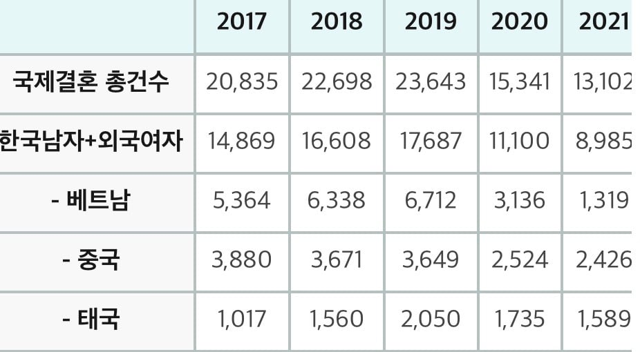
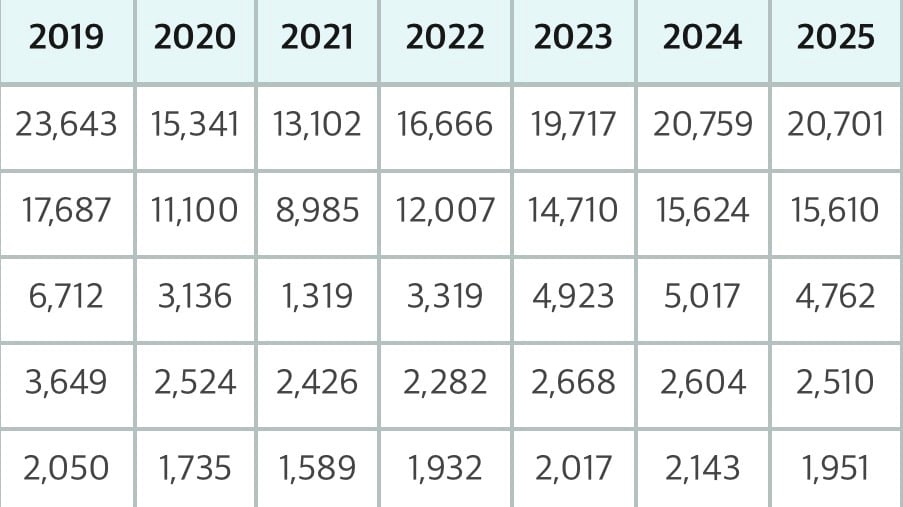
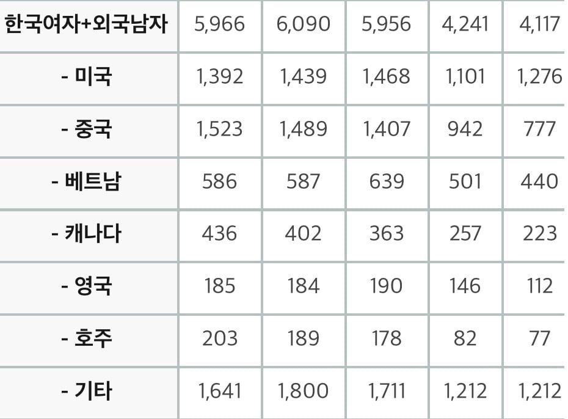
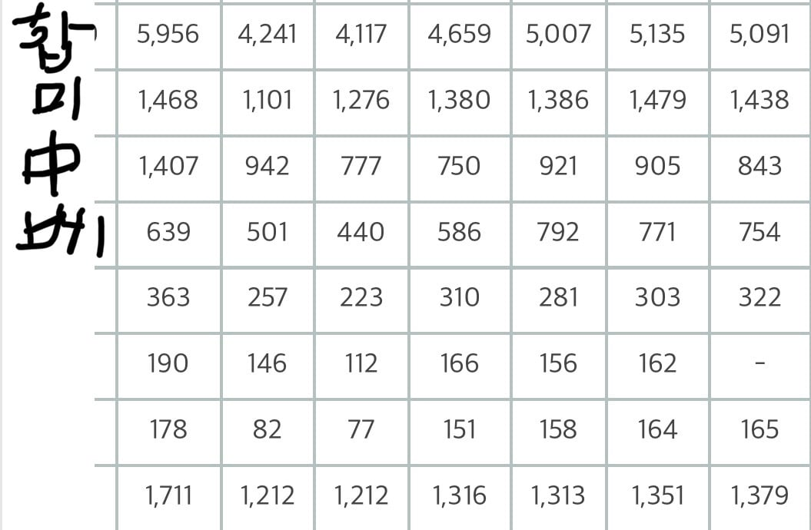

작년 한해 한국남자+외국여자 결혼수 15,610건 중
베트남 여자가 4,762건임
전체의 1/3 정도 차지함
베트남이 라이벌이라 주장하는 태국은 1,951건으로 3위를 차지함
대략 2.5배 정도 차이남


그리고 문제가 되는게 이 한국 여자+베트남 남자 결혼임
다들 알다시피 결혼비자로 들어온 베트남 여자가 조건 채워서 국적 세탁하고 고향 베트남 남자 불러서 결혼하는 거임
한 해 한국 남자+베트남 여자 결혼의 15%에 달하는 국적 먹튀가 이뤄지고 있는 셈임
웃긴건 3위인 태국은 한국여자+외국남자 순위권에 있지도 않음
태국 애들은 진짜로 그냥 잘 살고 있다는 거임
태국 밑으로 일본, 필리핀, 캄보디아도 있는데 얘네들도 밑에 외국남자 순위권에 없음
그나마 2위인 중국도 한국어를 원래부터 잘 해서 귀화가 용이한 조선족의 존재를 감안해야 됨
결국 국적을 대량으로 먹튀하는 건 베트남 밖에 없음
태국, 필리핀, 캄보디아 등 다른 동남아 국가도 안 이럼
얘네 대체 왜 이러냐?
유튭 보니까 번갯불 콩 볶듯이 초스피드로 셀렉하고 결혼 하더만 제대로 결혼생활이 될 리가 있겠냐